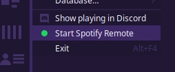
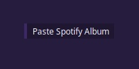
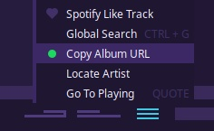
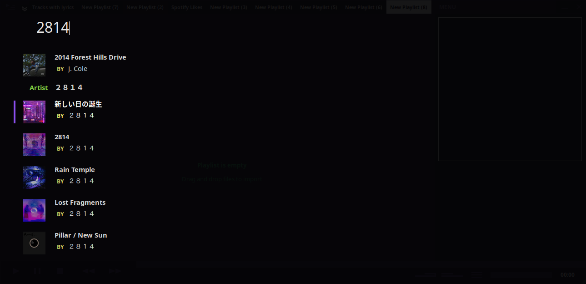
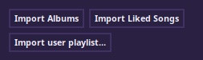

[HOME]
Playback control for Spotify
To get started, follow instructions here to get setup. You will need a Spotify Premium account to be able to control playback.
You will be able to import Spotify tracks to your playlists. Tauon will handle the transition between local and Spotify playback automatically.
Limitation: You will need to keep another Spotify client open for actual playback of audio.
Monitor a remote Spotify session
If playback is being directed from another application, you can begin monitoring playback by selecting "Start Spotify Remote" from MENU.
You can use FORWARD, BACK, STOP, SEEK to control remote playback. Tauon will start directing playback if you start a track form the tracklist.
Import a playing album
You can import the currently playing Spotify album to the end of the current playlist by scrolling to the bottom, right clicking and selecting "Add Playing Spotify Album"
Obtaining the playing album URL
To obtain the playing Spotify album URL, click the playback menu in the bottom panel and select "Copy Album URL". This copies the URL to the system clipboard.
Import Items by URL
You can import Spotify ALBUM, TRACK and PLAYLIST URL's by pasting using the Ctrl + v keyboard shortcut.
You can also paste albums and tracks by using tracklist context menus. You can also paste a playlist by clicking MENU then "Import Spotify Playlist".
Import items by search
To perform a Spotify search, type your search query as you normally would (triggering the Global Search screen), then press Tab to trigger Spotify search. Click on an album to import it to the end of the currently viewed playlist.
Clicking an artist result will create a new playlist containing albums by that artist.
Importing your Spotify library
You can import your saved Spotify albums and tracks (Likes) as playlists.
To do so, go MENU > Settings... > Accounts > Spotify and select Import Albums or Import Liked Songs.
Tip: You can reload these playlists by selecting "Regenerate" from the playlist tab context menu.
Note: These playlists will automatically update when adding or removing items using the Spotify specific context menu functions. Any manual edits to these playlists will not be updated to Spotify and will be overwritten the next time the playlist updates.
Importing and creating user playlists
You can import your own existing Spotify playlist by going MENU > Settings... > Accounts > Spotify and clicking "Import user playlist...". This will present a menu of your playlists.
Changes you make to these imported playlists won't be updated to Spotify automatically. You can manually upload the playlist (including all changes) by selecting "Upload" from the playlist tab context menu
If the Spotify playlist doesn't already exist, using "Upload" will be create a new Spotify playlist using the name of the playlist in Tauon at that time.
Tip: If changes were made externally, you can update the playlist by selecting "Regenerate" from the playlist tab context menu. This will discard any local un-uploaded changes.